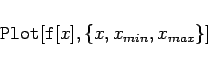
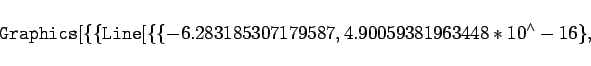

Inhalt Index DeskTop Bronstein

 Computeralgebrasysteme Graphik in Computeralgebrasystemen Graphik mit Mathematica Syntax der Graphikdarstellung
Computeralgebrasysteme Graphik in Computeralgebrasystemen Graphik mit Mathematica Syntax der Graphikdarstellung


Mathematica stellt spezielle Anweisungen für die graphische Darstellung von Funktionen zur Verfügung. Mit
|  | (20.82) |
wird die Funktion f(x) im Bereich zwischen x=xmin und x=xmax graphisch dargestellt. Mathematica erstellt nach internen Algorithmen eine Funktionstabelle und gibt die sich daraus ergebende Graphik über die Graphikprimitiven zurück.
| Beispiel |
|
Wenn die Funktion im Bereich zwischen und Man erkennt, daß Mathematica bei der Darstellung gewisse voreingestellte Graphikoptionen benutzt. So werden automatisch Achsen gezeichnet, diese entsprechend skaliert und mit x- und y-Werten versehen. An diesem Beispiel erkennt man auch die Wirkung der Voreinstellung von . Das Verhältnis der Gesamtbreite zur Gesamthöhe entspricht 1:0,618. Mit dem Befehl kann man sich die volle Darstellung des Graphikobjektes anzeigen lassen. Man erhält für das betrachtete Beispiel die Ausgabe: 
|
| (20.83) |
würde die Wiedergabe mit absolut gleich großen x- und y-Bereichen erfolgen.
Man kann mehrere Optionen gleichzeitig hintereinander angeben.
Mit der Eingabe
| (20.84) |
werden mehrere Funktionen in eine Graphik gezeichnet.
Mit der Anweisung
| (20.85) |
kann ein früher erzeugtes Bild erneut, wenn gewünscht mit veränderten Optionen, dargestellt werden.
Mit
| (20.86) |
können (mit liste als Liste von Graphikobjekten) Bilder nebeneinander, untereinander und matrixförmig zueinander angeordnet werden.